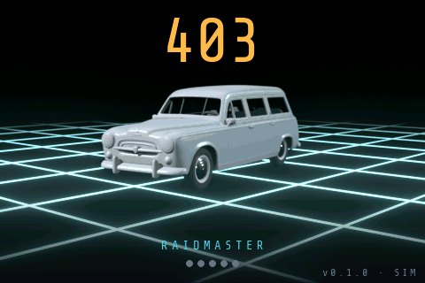
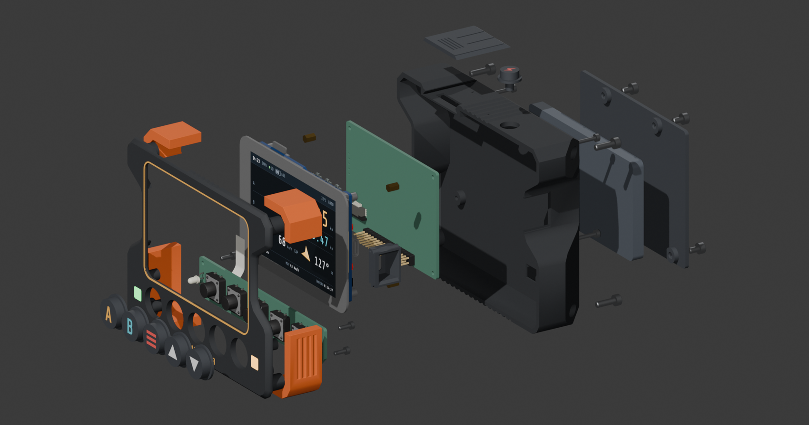
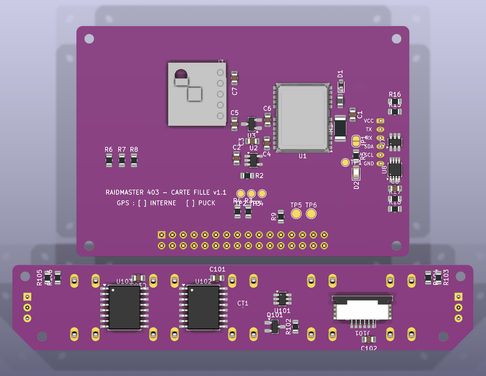
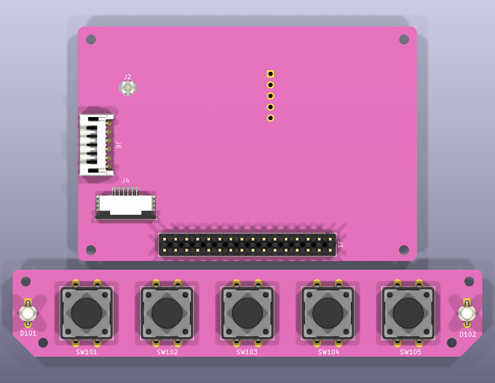

01 · L'écran
Les chiffres du roadbook, lisibles d'un coup d'œil
Distances partielles A et B, odomètre, vitesse, cap, moyenne et chrono. Mode raid pour l'épreuve, mode balade pour tous les jours, mode nuit, calibration automatique de la distance.
Projet DIY · open source · open hardware

Un tripmaster GPS de rallye-raid à construire soi-même. Rien à vendre : le code, la carte électronique et le boîtier sont publiés sous licence libre.
L'écran ci-dessus fait tourner le vrai firmware, compilé pour le navigateur.
01 · L'écran
Distances partielles A et B, odomètre, vitesse, cap, moyenne et chrono. Mode raid pour l'épreuve, mode balade pour tous les jours, mode nuit, calibration automatique de la distance.
02 · Le boîtier
Imprimé en PETG ou ASA (l'habitacle monte à 60 °C en été), pare-chocs en TPU, cinq boutons (A, B, menu, haut, bas), batterie interne rechargée en USB-C. Les fichiers STEP de chaque pièce sont publiés.

03 · L'électronique


04 · L'histoire
Fait maison pour une Peugeot 403 Familiale de 1956, pensé pour le raid Crazy Dust 2027 et utilisable au quotidien en mode balade.
Distance GPS uniquement : ni capteur de roue, ni intervention sur le câblage de la voiture.
05 · À construire soi-même
Le Raidmaster est un projet personnel, partagé tel quel : pas de boutique, pas de kit, pas de support ni de garantie. Les fichiers sont là pour être lus, reconstruits, modifiés et améliorés.